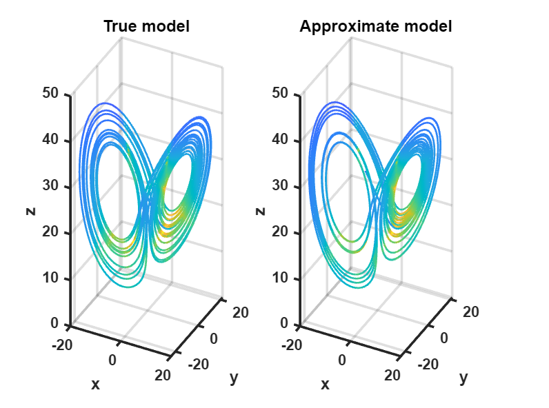

I am a Master's student in the Department of Mechanical Engineering at the University
of Texas at Austin. My interests include robotics, control systems, and autonomous
vehicles. I received my BS degree in the Department of Mechanical Engineering at the
University of Iowa, My study experience has sparked my passion for exploring innovative
solutions in the field of mechanical engineering.

Sparse Identification of Nonlinear
Dynamical Systems

The Sparse Identification of Nonlinear Dynamical Systems (SINDy) algorithm is a powerful tool for extracting
underlying equations from complex datasets in fields like climate science, neuroscience, and finance. By combining
sparse regression techniques and machine learning, SINDy can uncover hidden patterns and relationships, offering
valuable insights and predictions. This approach not only enhances our understanding of dynamic systems but also
holds promise for innovative solutions in areas such as climate modeling and financial forecasting.

This project addresses the pressing need to reduce greenhouse gas emissions, particularly from transportation.
The project highlights the development of a hybrid vehicle powertrain model using MATLAB Simulink,
focusing on a 14,000 lb UHAUL truck. The model integrates a vehicle longitudinal model, battery model,
and regenerative braking system. Control strategies include PID controllers for engine and battery management,
along with an Equivalent Consumption Minimization Strategy (ECMS) for power split optimization.
The simulations demonstrate effective power management and potential fuel savings, showcasing the importance of
such models in designing more efficient and environmentally friendly vehicles.
(Due to policy, the code will not shown).
Drones, also known as unmanned aerial vehicles (UAVs), are aircraft without a human pilot on board.
They can be remotely controlled or fly autonomously through software-controlled flight plans. I designed
and built a drone and a boat using 3D printed parts, motors, UWB, Raspberry Pi, and PDB. In my project,
I implemented a Vicon motion capture system for precise monitoring and recording of the robot's locomotion.
Additionally, I optimized the drone's flight stability through tuning of PID controllers, thereby enhancing
its flying performance.
Course Taken
Control Courses
- Linear control
- Advanced linear control systems
- Nonlinear control systems
- Cooperative autonmous systems
- Nonlinear control
- Advacmed vehicle powertrain system control
- Stochastic system estimation & control
- learning based optimal control
Others Courses
- Statistical estimation theory
- Intro to optimization
- Engineer anlysis
- Heat transfer
- Manufacturing processes
- Experimental engineering
- Scientific computing and machine learning
- Modern robotics and automation
- Intermediate Kinematics and Dynamics